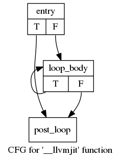
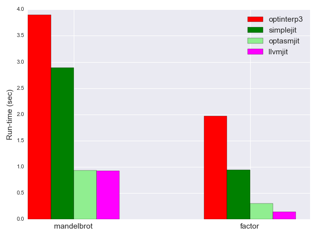

This is part 3 of my "Adventures in JIT compilation" series. Part 1 introduced the BF input language and presented a few interpreters in increasing degree of optimization. In part 2 we've seen how to roll a JIT compiler for BF from scratch, by emitting x64 machine code into executable memory and jumping to it for execution.
In this part, I'm going to present another JIT compiler for BF. This time, however, rather than rolling everything from scratch, I'll be using the LLVM framework.
LLVM as a programming language backend
I'll start by saying this post is not meant to be a full tutorial for LLVM. LLVM has a pretty good tutorial already (see also my Python port of it). I've also written more in-depth pieces about LLVM in the past; see for example Life of an instruction in LLVM. That said, I do hope that seeing how to apply LLVM to develop a complete JIT compiler for BF can be useful, and the complete code sample can serve as a starting point for programming language enthusiasts to develop their own backends with a fairly modern version of LLVM. If you have a bit more time, look for exercise and experiment suggestions in the footnotes.
Speaking of LLVM versions... LLVM's C++ API is notoriously volatile, and code working today has little chance of working in just a few months without any changes. However, LLVM does have numbered releases that can be used to maintain some sort of sanity since they are extensively tested. The code for this post was developed with the LLVM 4.0 release. Even if you're reading this in the year 2022, hopefully you should be able to download LLVM 4.0 and compile & link the sample code.
As opposed to the use of asmjit in part 2, LLVM offers several distinct advantages:
- Since LLVM comes with many state-of-the-art optimizations on the IR level, we can generate fairly straightforward LLVM IR from our source language, without worrying too much about its efficiency. I'll demonstrate this shortly.
- LLVM is multi-target. In this post I'm showing a JIT compiler that emits code for the machine it runs on (x64 in my case), but one can easily reuse the same code to compile BF to ARM, PowerPC, MIPS or a bunch of other backends supported by LLVM.
- LLVM comes with a large set of tools useful to visualize and manipulate IR and other stages of compilation. I mention a couple uses of the opt tool throughout the post, and there are others.
Generating LLVM IR from BF
The core of the code generation code in this sample is fairly short - only ~130 lines of C++ in emit_jit_function. I'll walk through it, leaving some details out. Feel free to check the LLVM documentation or API headers for more information, if needed.
llvm::FunctionType* jit_func_type =
llvm::FunctionType::get(void_type, {}, false);
llvm::Function* jit_func = llvm::Function::Create(
jit_func_type, llvm::Function::ExternalLinkage, JIT_FUNC_NAME, module);
llvm::BasicBlock* entry_bb =
llvm::BasicBlock::Create(context, "entry", jit_func);
llvm::IRBuilder<> builder(entry_bb);
We begin by creating a LLVM function to hold the emitted code. The function is named __llvmjit (which is what the constant JIT_FUNC_NAME contains) and its linkage is external so that we could call it from outside the LLVM module where it resides. We also create the entry basic block in the function where the initial code will go, as well as an IR builder that makes the job of emitting LLVM IR a bit easier than using raw APIs.
More setup follows:
llvm::AllocaInst* memory =
builder.CreateAlloca(int8_type, builder.getInt32(MEMORY_SIZE), "memory");
builder.CreateMemSet(memory, builder.getInt8(0), MEMORY_SIZE, 1);
llvm::AllocaInst* dataptr_addr =
builder.CreateAlloca(int32_type, nullptr, "dataptr_addr");
builder.CreateStore(builder.getInt32(0), dataptr_addr);
In this version of the BF JIT, I decided to keep the data memory on the stack of the JITed function. This makes it easier for LLVM to optimize accesses to the memory (as we'll see), because the memory is private - it can't be aliased from outside the function and can't have side effects, which frees the optimizer to be more aggressive [1]. The data pointer itself is kept on the stack too (created with an alloca instruction) - more on this very shortly. The data pointer is initialized to 0, per BF semantics [2].
Finally, as usual for one-pass code emission from BF, we have to keep a stack of open brackets (in the asmjit version the type was called BracketLabels):
std::stack<BracketBlocks> open_bracket_stack;
Now we're ready for the compilation loop that takes the next BF instruction and emits the LLVM IR for it. First, pointer movement:
for (size_t pc = 0; pc < program.instructions.size(); ++pc) {
char instruction = program.instructions[pc];
switch (instruction) {
case '>': {
llvm::Value* dataptr = builder.CreateLoad(dataptr_addr, "dataptr");
llvm::Value* inc_dataptr =
builder.CreateAdd(dataptr, builder.getInt32(1), "inc_dataptr");
builder.CreateStore(inc_dataptr, dataptr_addr);
break;
}
case '<': {
llvm::Value* dataptr = builder.CreateLoad(dataptr_addr, "dataptr");
llvm::Value* dec_dataptr =
builder.CreateSub(dataptr, builder.getInt32(1), "dec_dataptr");
builder.CreateStore(dec_dataptr, dataptr_addr);
break;
}
To move the data pointer, we load its value from its storage on the stack, update it (by either incrementing or decrementing) and store it back. If this seems inefficient, read on! Later on, the post describes why this style of LLVM IR emission is not only acceptable, but desirable.
For data memory updates, the code is not much more complicated:
case '+': {
llvm::Value* dataptr = builder.CreateLoad(dataptr_addr, "dataptr");
llvm::Value* element_addr =
builder.CreateInBoundsGEP(memory, {dataptr}, "element_addr");
llvm::Value* element = builder.CreateLoad(element_addr, "element");
llvm::Value* inc_element =
builder.CreateAdd(element, builder.getInt8(1), "inc_element");
builder.CreateStore(inc_element, element_addr);
break;
}
case '-': {
llvm::Value* dataptr = builder.CreateLoad(dataptr_addr, "dataptr");
llvm::Value* element_addr =
builder.CreateInBoundsGEP(memory, {dataptr}, "element_addr");
llvm::Value* element = builder.CreateLoad(element_addr, "element");
llvm::Value* dec_element =
builder.CreateSub(element, builder.getInt8(1), "sub_element");
builder.CreateStore(dec_element, element_addr);
break;
}
We similarly load the data pointer, this time using it to compute an offset into the memory (using LLVM's getelementptr instruction). We then load the element from memory, update it and store it back. Note how we use the inbounds variant of getelementptr; BF doesn't define the behavior of stepping outside the bounds of memory - we leverage this fact to let LLVM produce more optimized code.
For I/O, we use a technique similar to the one employed with asmjit in part 2: call the getchar/putchar functions from the host. If you look at the signature of emit_jit_function, it takes a llvm::Function* for each of getchar and putchar; these are declared in the caller by adding their declaration to the module. Later, in the section dealing with the JIT we'll see how these get resolved at run-time.
case '.': {
llvm::Value* dataptr = builder.CreateLoad(dataptr_addr, "dataptr");
llvm::Value* element_addr =
builder.CreateInBoundsGEP(memory, {dataptr}, "element_addr");
llvm::Value* element = builder.CreateLoad(element_addr, "element");
llvm::Value* element_i32 =
builder.CreateIntCast(element, int32_type, false, "element_i32_");
builder.CreateCall(putchar_func, element_i32);
break;
}
case ',': {
llvm::Value* user_input =
builder.CreateCall(getchar_func, {}, "user_input");
llvm::Value* user_input_i8 =
builder.CreateIntCast(user_input, int8_type, false, "user_input_i8_");
llvm::Value* dataptr = builder.CreateLoad(dataptr_addr, "dataptr");
llvm::Value* element_addr =
builder.CreateInBoundsGEP(memory, {dataptr}, "element_addr");
builder.CreateStore(user_input_i8, element_addr);
break;
}
As usual, the trickiest part of generating code for BF is handling the loops, which could be nested. LLVM makes this fairly easy by having basic blocks as first-class citizens. Every loop body gets its basic block, and the original block gets split to two - the first part jumping into the loop, the last part happening after the loop (since we can skip directly to it). Here's how the control-flow graph within a function with just a single loop looks [3]:
Note how the jumps between basic blocks happen on a condition and have T (true) or F (false) clauses. These just encode the usual BF semantics:
- For a [, we compare the current memory cell with 0; if it's 0, we skip the loop (the T clause); if it's not 0, we enter the loop (the F clause).
- For a ], we compare the current memory cell with 0; if it's 0, we jump back to the loop start; otherwise we end the loop.
Here's the code generating LLVM IR from [:
case '[': {
llvm::Value* dataptr = builder.CreateLoad(dataptr_addr, "dataptr");
llvm::Value* element_addr =
builder.CreateInBoundsGEP(memory, {dataptr}, "element_addr");
llvm::Value* element = builder.CreateLoad(element_addr, "element");
llvm::Value* cmp =
builder.CreateICmpEQ(element, builder.getInt8(0), "compare_zero");
llvm::BasicBlock* loop_body_block =
llvm::BasicBlock::Create(context, "loop_body", jit_func);
llvm::BasicBlock* post_loop_block =
llvm::BasicBlock::Create(context, "post_loop", jit_func);
builder.CreateCondBr(cmp, post_loop_block, loop_body_block);
open_bracket_stack.push(BracketBlocks(loop_body_block, post_loop_block));
builder.SetInsertPoint(loop_body_block);
break;
}
With the overview and control-flow graph above, I hope it's clear. The most interesting part is using the basic blocks to represent parts of the loop. When [ is encountered, we create both the loop and "post loop" blocks, since the branch instruction has to refer to them. We also save these blocks on the open bracket stack to refer to them when the matching ] is encountered. Finally, we set our IR builder to insert all subsequent instructions into the loop block.
This is how ] is handled:
case ']': {
if (open_bracket_stack.empty()) {
DIE << "unmatched closing ']' at pc=" << pc;
}
BracketBlocks blocks = open_bracket_stack.top();
open_bracket_stack.pop();
llvm::Value* dataptr = builder.CreateLoad(dataptr_addr, "dataptr");
llvm::Value* element_addr =
builder.CreateInBoundsGEP(memory, {dataptr}, "element_addr");
llvm::Value* element = builder.CreateLoad(element_addr, "element");
llvm::Value* cmp =
builder.CreateICmpNE(element, builder.getInt8(0), "compare_zero");
builder.CreateCondBr(cmp, blocks.loop_body_block, blocks.post_loop_block);
builder.SetInsertPoint(blocks.post_loop_block);
break;
}
Pretty much as we'd expect: the relevant blocks are popped from the stack and used as targets for another conditional branch [4].
IR sample for a simple BF program
Let's see what LLVM IR our code emits for the simple count1to5.bf program:
++++++++ ++++++++ ++++++++ ++++++++ ++++++++ ++++++++
>+++++
[<+.>-]
The full LLVM-based JIT is available in llvmjit.cpp. When invoked in verbose mode, it will dump LLVM IR for the translated program before and after LLVM optimization. Let's start by looking at the pre-optimization IR. I've added comments on lines starting with ###:
define void @__llvmjit() {
entry:
### The entry BB starts by declaring the memory and data pointer, and
### initializing the data pointer to 0.
%memory = alloca i8, i32 30000
call void @llvm.memset.p0i8.i64(i8* %memory, i8 0, i64 30000, i32 1, i1 false)
%dataptr_addr = alloca i32
store i32 0, i32* %dataptr_addr
### The following 5 instructions increment memory[dataptr] (with dataptr
### remaining at 0, as initialized), and they are repeated 48 times...
%dataptr = load i32, i32* %dataptr_addr
%element_addr = getelementptr inbounds i8, i8* %memory, i32 %dataptr
%element = load i8, i8* %element_addr
%inc_element = add i8 %element, 1
store i8 %inc_element, i8* %element_addr
### ... 47 more times skipped ...
store i8 %inc_element184, i8* %element_addr182
%dataptr185 = load i32, i32* %dataptr_addr
%element_addr186 = getelementptr inbounds i8, i8* %memory, i32 %dataptr185
%element187 = load i8, i8* %element_addr186
%inc_element188 = add i8 %element187, 1
store i8 %inc_element188, i8* %element_addr186
### Now incrementing dataptr and 5 more data increments.
%dataptr189 = load i32, i32* %dataptr_addr
%inc_dataptr = add i32 %dataptr189, 1
store i32 %inc_dataptr, i32* %dataptr_addr
%dataptr190 = load i32, i32* %dataptr_addr
%element_addr191 = getelementptr inbounds i8, i8* %memory, i32 %dataptr190
%element192 = load i8, i8* %element_addr191
%inc_element193 = add i8 %element192, 1
store i8 %inc_element193, i8* %element_addr191
### ... 4 more increments skipped
### Load memory[dataptr] and compare it to 0; on true, jump to %post_loop;
### on false jump to %loop_body.
%dataptr210 = load i32, i32* %dataptr_addr
%element_addr211 = getelementptr inbounds i8, i8* %memory, i32 %dataptr210
%element212 = load i8, i8* %element_addr211
%compare_zero = icmp eq i8 %element212, 0
br i1 %compare_zero, label %post_loop, label %loop_body
loop_body:
### Decrement dataptr
%dataptr213 = load i32, i32* %dataptr_addr
%dec_dataptr = sub i32 %dataptr213, 1
store i32 %dec_dataptr, i32* %dataptr_addr
### Increment memory[dataptr]
%dataptr214 = load i32, i32* %dataptr_addr
%element_addr215 = getelementptr inbounds i8, i8* %memory, i32 %dataptr214
%element216 = load i8, i8* %element_addr215
%inc_element217 = add i8 %element216, 1
store i8 %inc_element217, i8* %element_addr215
### Invoke putchar on memory[dataptr]
%dataptr218 = load i32, i32* %dataptr_addr
%element_addr219 = getelementptr inbounds i8, i8* %memory, i32 %dataptr218
%element220 = load i8, i8* %element_addr219
%element_i32_ = zext i8 %element220 to i32
%0 = call i32 @putchar(i32 %element_i32_)
### Increment dataptr
%dataptr221 = load i32, i32* %dataptr_addr
%inc_dataptr222 = add i32 %dataptr221, 1
store i32 %inc_dataptr222, i32* %dataptr_addr
### Decrement memory[dataptr]
%dataptr223 = load i32, i32* %dataptr_addr
%element_addr224 = getelementptr inbounds i8, i8* %memory, i32 %dataptr223
%element225 = load i8, i8* %element_addr224
%sub_element = sub i8 %element225, 1
store i8 %sub_element, i8* %element_addr224
### Load memory[dataptr] and compare it to 0; on true, jump back to
### %loop_body; on false jump to %post_loop.
%dataptr226 = load i32, i32* %dataptr_addr
%element_addr227 = getelementptr inbounds i8, i8* %memory, i32 %dataptr226
%element228 = load i8, i8* %element_addr227
%compare_zero229 = icmp ne i8 %element228, 0
br i1 %compare_zero229, label %loop_body, label %post_loop
post_loop
call void @dump_memory(i8* %memory)
ret void
}
As discussed before, this code is doing a huge amount of repetetive and mostly unnecessary work. It keeps storing and reloading values it should already have. But this is precisely what the LLVM optimizer is designed to fix. Let's see the post-optimization code LLVM produces:
define void @__llvmjit() local_unnamed_addr {
loop_body.preheader:
%memory290 = alloca [30000 x i8], align 1
%memory290.sub = getelementptr inbounds [30000 x i8], [30000 x i8]* %memory290, i64 0, i64 0
%0 = getelementptr inbounds [30000 x i8], [30000 x i8]* %memory290, i64 0, i64 2
call void @llvm.memset.p0i8.i64(i8* nonnull %0, i8 0, i64 29998, i32 1, i1 false)
store i8 48, i8* %memory290.sub, align 1
%element_addr191 = getelementptr inbounds [30000 x i8], [30000 x i8]* %memory290, i64 0, i64 1
store i8 5, i8* %element_addr191, align 1
br label %loop_body
loop_body:
%1 = tail call i32 @putchar(i32 49)
%2 = tail call i32 @putchar(i32 50)
%3 = tail call i32 @putchar(i32 51)
%4 = tail call i32 @putchar(i32 52)
%5 = tail call i32 @putchar(i32 53)
store i8 53, i8* %memory290.sub, align 1
store i8 0, i8* %element_addr191, align 1
call void @dump_memory(i8* nonnull %memory290.sub)
ret void
}
The LLVM optimizer is extremely aggressive! Not only all the repetition is gone, but there isn't even a loop any more because LLVM statically computed it will just run 5 times and unrolled it completely. putchar is invoked 5 times with the values the loop would have produced, and that's all. The reason LLVM kept memory around was only so the call to dump_memory would have data. If we remove this debugging call, the function turns into:
define void @__llvmjit() local_unnamed_addr #0 {
entry:
%0 = tail call i32 @putchar(i32 49)
%1 = tail call i32 @putchar(i32 50)
%2 = tail call i32 @putchar(i32 51)
%3 = tail call i32 @putchar(i32 52)
%4 = tail call i32 @putchar(i32 53)
ret void
}
Observing how LLVM handles our loops
So the count1to5 sample was a bit too simple for the LLVM optimizer. To see our loops actually being emitted, we'll have to resort to more tricks - by placing "input" instructions (, in BF) in stratetic locations so that LLVM can't just infer their value statically. Take for example the (slightly-nonsensical) BF program:
>,
[<+.>,]
It places user input into cell 1, and then repeatedly:
- Increments cell 0, printing its value out
- Places new user input in cell 1
It will terminate when the user input is 0. Not very useful, but it does the job. Here's the optimized IR LLVM emits for it:
define void @__llvmjit() local_unnamed_addr {
entry:
%memory29 = alloca [30000 x i8], align 1
%memory29.sub = getelementptr inbounds [30000 x i8], [30000 x i8]* %memory29, i64 0, i64 0
call void @llvm.memset.p0i8.i64(i8* nonnull %memory29.sub, i8 0, i64 30000, i32 1, i1 false)
%user_input = tail call i32 @getchar()
%user_input_i8_ = trunc i32 %user_input to i8
%element_addr = getelementptr inbounds [30000 x i8], [30000 x i8]* %memory29, i64 0, i64 1
store i8 %user_input_i8_, i8* %element_addr, align 1
%compare_zero = icmp eq i8 %user_input_i8_, 0
br i1 %compare_zero, label %post_loop, label %loop_body.preheader
loop_body.preheader:
br label %loop_body
loop_body:
%element730 = phi i8 [ %inc_element, %loop_body ], [ 0, %loop_body.preheader ]
%inc_element = add i8 %element730, 1
%element_i32_ = zext i8 %inc_element to i32
%0 = tail call i32 @putchar(i32 %element_i32_)
%user_input13 = tail call i32 @getchar()
%user_input_i8_14 = trunc i32 %user_input13 to i8
%compare_zero20 = icmp eq i8 %user_input_i8_14, 0
br i1 %compare_zero20, label %post_loop.loopexit, label %loop_body
post_loop.loopexit:
store i8 %inc_element, i8* %memory29.sub, align 1
store i8 0, i8* %element_addr, align 1
br label %post_loop
post_loop:
call void @dump_memory(i8* nonnull %memory29.sub)
ret void
}
The two most important points to note are:
- There's no extra stack movement; like, at all. LLVM statically computed what happens at address 0 and address 1 and just juggles virtual registers with these values, actually storing to memory only outside the loop!
- To be able to do that, it generated a phi instruction at the loop body start.
The latter is especially important: this is LLVM converting the IR to SSA form, where every value is assigned only once and special phi nodes are required to merge multiple possible values. SSA is well outside the scope of this humble post, but I suggest reading about it. LLVM's mem2reg pass converts our naive stack-using code to SSA with virtual registers, and SSA form makes it much easier for the compiler to analyze the IR and optimize it aggressively.
On the other hand, emitters of LLVM IR don't have to worry about efficient usage of virtual registers and can just assign stack slots for all "variables", leaving the optimization to LLVM. For our simple use case of BF this may not matter too much, but think about a classical programming language where a function may have dozens of variables to track [5].
JITing LLVM IR to executable machine code
Being able to optimize LLVM IR is just one of the strengths of LLVM llvmjit is using. The other is the ability to efficiently execute this IR at run-time by JITing it into an excutable in-memory chunk of machine code.
In llvmjit, the part doing this is:
SimpleOrcJIT jit(/*verbose=*/verbose);
module->setDataLayout(jit.get_target_machine().createDataLayout());
jit.add_module(std::move(module));
llvm::JITSymbol jit_func_sym = jit.find_symbol(JIT_FUNC_NAME);
if (!jit_func_sym) {
DIE << "Unable to find symbol " << JIT_FUNC_NAME << " in module";
}
using JitFuncType = void (*)(void);
JitFuncType jit_func_ptr =
reinterpret_cast<JitFuncType>(jit_func_sym.getAddress());
jit_func_ptr();
Which, of course, leaves the question - what is SimpleOrcJit? It's a simplified instantiation of LLVM's newest JIT engine - ORC. For the full code see this header and its accompanying source file. My implementation of the JIT is very similar to the one in the LLVM tutorial, with the addition of dumping the JITed machine code to a binary file prior to returning an executable pointer to it.
LLVM's ORC JIT looks formidable, but there's no magic to it. In its essence, it's just doing the thing my introduction to JITing describes, with with many (many!) more layers on top. One interesting thing I would like to mention, though, is how the JIT finds host functions to call, since it's designed differently from the previous JITs I showed.
For llvmjit, all we do is declare (without defining) the host functions in the module, so that we can insert a call instruction to these functions. For example:
declare i32 @putchar(i32) local_unnamed_addr #0
Unlike the approach with asmjit-based JITs, we don't encode the address of the host function in the JITed code. Rather we let the JIT resolve it automatically. This is done by adding the following resolver to the JIT:
auto resolver = orc::createLambdaResolver(
[this](const std::string& name) {
if (auto sym = find_mangled_symbol(name)) {
return sym;
}
return JITSymbol(nullptr);
},
[](const std::string& name) {
if (auto sym_addr =
RTDyldMemoryManager::getSymbolAddressInProcess(name)) {
return JITSymbol(sym_addr, JITSymbolFlags::Exported);
}
return JITSymbol(nullptr);
});
The second lambda function passed to the resolver is invoked when the LLVM IR being compiled contains a call to a symbol that wasn't defined in the module. In this case, what we do amounts to a call to dlsym with the symbol name. The constructor of SimpleOrcJIT calls LoadLibraryPermanently(nullptr) which translates to dlopen(nullptr, ...), meaning that all symbols contained in the host executable are visible to the JIT. To accomplish this, llvmjit is compiled with the -rdynamic linker flag. This way the JITed code can call any function found in the host code, including standard C library functions like putchar.
How fast does it run?
Let's see how llvmjit compares to the JITs developed in part 2. To make this measurement fair, I'm instrumenting the program to report execution time separately from compilation time, since LLVM may take a while optimizing a large IR program.
With this instrumentation, llvmjit takes 0.92 seconds to run mandelbrot, which is virtually the same time optasmjit took; it takes 0.14 seconds to run factor, half of the time of optasmjit. That said, for these programs LLVM optimizations took roughly the same amount of time as execution, so if you include everything in - llvmjit is equal on factor and loses by ~2x on mandelbrot [6]. So, as often is the case with JITs, it all depends on the use case - if we care about run-time of long programs, it makes sense to spend more time optimizing; it we mostly care about short programs, it doesn't. This is why many modern JITs (think JavaScript) are multi-stage - starting with a fast interpreter or baseline (very light on optimization) JIT, and switching to a more optimizing JIT if the program turns out to be longer-running than initially expected.
Optimization-time aside, it's quite amazing that LLVM is managing to reach the speed of optasmjit, which emits tight machine code and uses domain-specific optimizations to convert whole loops from the BF code to simple O(1) sequences. This is due to the power of LLVM's optimizer; it is able, on its own, to infer that some of these loops are really accomplishing trivial computations. I suggest taking this as an exercise: write simple BF programs and run them through llvmjit --verbose to observe the post-optimization IR. You'll see that LLVM is able to remove loops like [-] and [<->+], replacing them by simple data initialization & movement. Bonus points for uncovering other optimizations that LLVM did but our optasmjit didn't - after all, LLVM does run the factor benchmark much faster, so there must be something interesting there.
Conclusion
After playing with manual code-generation in part 2, this post demonstrates using an industrial-strength compiler backend to create a JIT for BF. LLVM is a large and complex library with a steep learning curve, but once you're past the initial ramp-up stage it's an extremely powerful tool. LLVM lets you emit very straightforward code without worrying about things like registers and recomputing the same values over and over again. Its state-of-the art optimizer removes all these inefficiencies, producing extremely tight IR. Moreover, LLVM lets us target multiple architectures very easily from the same code - just choose which targets you want when configuring & compiling LLVM itself, and you have a multi-target compiler.
However, LLVM has downsides as well - it's large, and its compile time is considerable. This sometimes makes it less desirable in situations where a small footprint and fast compilation are required. For an interesting account of how the WebKit developers replaced LLVM with a custom backend for their "last-tier" optimized JIT, read Introducing the B3 JIT compiler.
Links to all posts in this series:
| [1] | As an exercise, move this memory outside the function - by allocating it on the host and passing a pointer to the JITed code, similarly to how it was done in part 2. Observe how this affects LLVM's optimization, if at all. Read on LLVM's concepts of volatile and aliasing and think about how they may affect optimizations. |
| [2] | A fun experiment is to remove this initialization and observe what LLVM does with the code. I had this bug initially, and it's a brilliant demonstration of LLVM's capability of optimizing code that has undefined behavior (in this case using uninitialized values). |
| [3] | This CFG is produced automatically by LLVM and is a good example of the tools provided by default with this framework. To generate it, I took the LLVM IR file dumped by llvmjit in verbose mode, and ran LLVM's opt tool on it with the -view-cfg-only flag. This makes opt dump a Graphviz .dot file which can then be converted to an image. |
| [4] | Exercise: why do we need to save loop_body_block at all? When a ] is encountered, shouldn't the matching loop_body_block be the same one as the currently populated block? |
| [5] | A cool experiment to try is compile some C function to LLVM IR with the Clang front-end and observe stack usage in unoptimized code, followed by running opt -O3 to see what the optimizer turned it into. |
| [6] | For mandelbrot, the textual representation of LLVM IR generated for the BF program runs to ~42,000 lines, which takes LLVM 0.8 seconds to fully optimize. |